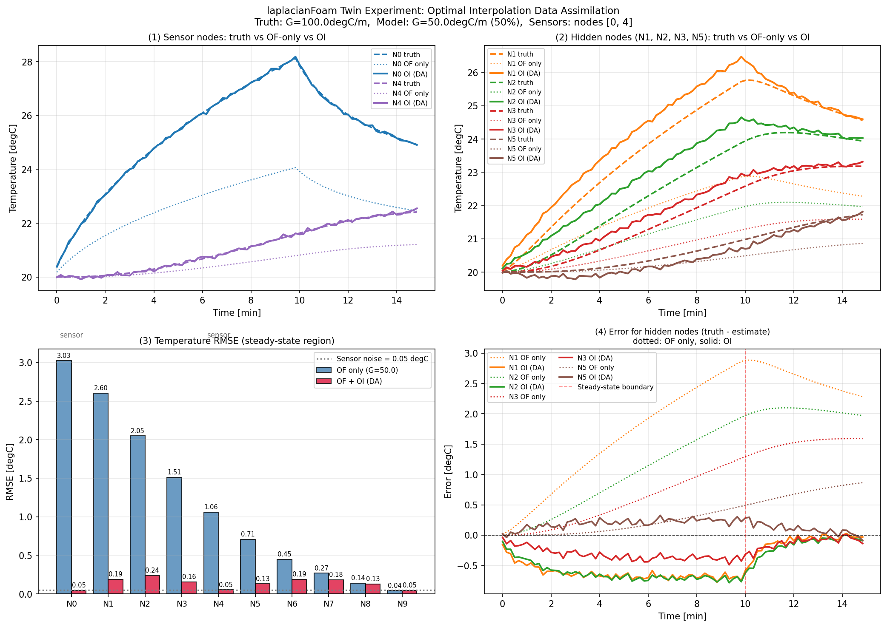

laplacianFoam + optimal interpolation
データ同化テスト
目的
OpenFOAM の温度場予測をブラックボックスとして扱い、センサ観測でセル温度を補正するデータ同化の流れを作る。
やったこと
`laplacianFoam` を 1 ステップずつ進め、Python 側で optimal interpolation による補正を行い、補正後の温度場を次ステップへ書き戻した。
見るもの
`truth`、`OpenFOAM only`、`OpenFOAM DA (OI)` を比較し、観測を入れることで温度場推定がどう変わるかを見る。
| 名前 | 意味 |
|---|---|
| `truth` | 左端の加熱を正しい強さにした、正解として扱う計算結果 |
| `OpenFOAM only` | 左端の加熱を半分に間違えた、補正なしの計算結果 |
| `OpenFOAM DA (OI)` | 同じく加熱を半分に間違えた計算を、センサ観測で補正した結果 |

OpenFOAM で見ている温度場
描画条件
| 項目 | 内容 |
|---|---|
| ケース | `with_da` / OpenFOAM DA (OI) |
| 時刻 | `0-900 s` のアニメーション |
| 表示量 | 温度 `T` |
| 色範囲 | 約 `20-25 degC` |
| セル数 | 10 cells |
この 002 で整理したいこと
どういう手法か
OpenFOAM の時間発展行列を作らず、予測温度場とセンサ値の差を OI で空間的に配る。
何を実装したか
正解データ生成、DA なし、DA ありの 3 ケースを laplacianFoam で回し、Python 側で補正を挟む。
何が出たか
境界条件が 50% ずれたモデルでも、2 点観測で全体の RMSE が大きく下がった。
対象問題: 1 次元相当の熱伝導
`laplacianFoam` が温度場を時間発展させる。
ツイン実験の意図
正解役の計算も予測モデルも OpenFOAM で作るが、境界勾配だけを意図的にずらす。
| ケース | 境界勾配 |
|---|---|
| truth | 左端の加熱を正しい強さにした条件 |
| model | 左端の加熱を正解の半分にした条件 |
今回の重要な設計: A_d を作らない
避けたこと
- OpenFOAM の内部離散化行列を Python 側で再現する
- 時間発展行列 `A_d` を推定する
- ソルバごとに同化コードを作り直す
採用したこと
- 時間発展は OpenFOAM に任せる
- Python は予測値と観測値の差だけを見る
- 固定した背景誤差共分散 `B` で補正を広げる
ofi.write_field(k * DT, x_current, gradient=g_model_series[k])
ofi.run_step(k * DT, (k + 1) * DT)
x_pred = ofi.read_field((k + 1) * DT)手法: optimal interpolation
OpenFOAM 予測値を背景値とし、センサ観測との差を OI ゲインで全節点へ配る。
H
状態ベクトルからセンサ位置だけを取り出す行列。
B
OpenFOAM 予測誤差が空間的にどう似ていそうかを表す。
R
観測ノイズの大きさ。今回は `0.05 degC`。
B は「誤差の広がり方」の仮定
今回の `B` は節点間距離から作る。
x = np.arange(N_NODES) * DX
distance = np.abs(x[:, None] - x[None, :])
B = BACKGROUND_ERROR_STD**2 * np.exp(
-(distance**2) / (2.0 * CORRELATION_LENGTH_M**2)
)近い節点ほど同じ方向に間違っていそう、という仮定。
| センサからの距離 | 重みの目安 | 意味 |
|---|---|---|
| 0.00 m | 約 1.00 | ほぼ直接補正 |
| 0.03 m | 約 0.88 | 強く補正 |
| 0.06 m | 約 0.61 | 中程度 |
| 0.09 m | 約 0.32 | 弱め |
| 0.12 m | 約 0.14 | かなり弱い |
今回回した 3 ケース
| 項目 | 設定 |
|---|---|
| ソルバ | `laplacianFoam` |
| セル数 / 棒長 | 10 cells / 0.3 m |
| 時間刻み / ステップ数 | 10 s / 90 steps |
| センサ位置 | Node 0, Node 4 |
| 背景誤差標準偏差 / 相関長 | 3.0 degC / 0.06 m |
`truth`、`OpenFOAM only`、`OF + OI` の違い
| 表示名 | フォルダ名 | 境界勾配 | センサ観測 | 目的 |
|---|---|---|---|---|
| truth | `oi/results/truth/` | 左端の加熱を正しい強さにした条件 内部名: `G_TRUE = 100 degC/m` |
使わない | 正解として扱う正解として扱う計算結果を作る |
| OpenFOAM only | `oi/results/model_only/` | 左端の加熱を正解の半分にした条件 内部名: `G_MODEL = 50 degC/m` |
使わない | 境界条件が外れたとき、OpenFOAM 単独でどれだけずれるかを見る |
| OF + OI | `oi/results/with_da/` | 左端の加熱を正解の半分にした条件 内部名: `G_MODEL = 50 degC/m` |
Node 0, Node 4 を使う | 同じ外れたモデルを、センサ観測でどれだけ補正できるかを見る |
なぜ正解役と予測モデルを分けたか
`truth`: 正解役
正しい加熱条件を知っている仮想実験として、左端の加熱を強めた条件で OpenFOAM を走らせる。
目的:
実測実験の代わりに、比較可能な正解データを作る
条件:
solver = laplacianFoam
left boundary = fixedGradient 100 degC/m
right boundary = fixedValue 20 degC`OpenFOAM only`: 誤差を持つ予測
左端の加熱を半分に間違えたモデルとして、OpenFOAM を走らせる。
目的:
データ同化なしだと、どれだけ truth から外れるかを見る
条件:
solver = laplacianFoam
left boundary = fixedGradient 50 degC/m
right boundary = fixedValue 20 degC
sensor correction = none`OF + OI` は何が違うか
`OF + OI` も、OpenFOAM 予測の境界条件は `OpenFOAM only` と同じ。
違いは、各ステップで `truth` から作った疑似センサ値を使い、OpenFOAM のセル温度を補正すること。
比較の読み方
| 比較 | 意味 |
|---|---|
| `truth` vs `OpenFOAM only` | モデル誤差の大きさ |
| `truth` vs `OF + OI` | 同化後の推定誤差 |
| `OpenFOAM only` vs `OF + OI` | OI 補正の効果 |
OpenFOAM と Python の接続
1 ステップずつ止める
DA ありケースでは OpenFOAM を最後まで一気に走らせない。
各ステップで温度場を読み、OI で補正し、補正後の場を次の初期条件にする。
ofi.write_field(k * DT, x_current, gradient=g_model_series[k])
ofi.run_step(k * DT, (k + 1) * DT)
x_pred = ofi.read_field((k + 1) * DT)
y = H @ truth_T[k] + np.random.randn(n_obs) * OBS_NOISE_STD
innovation = y - H @ x_pred
x_da = x_pred + gain @ innovation
x_current = x_daセル値は毎ステップ補正して書き戻す
この 002 では、OpenFOAM の計算結果を後処理で見るだけではない。
ofi.write_field(k * DT, x_current, gradient=g_model_series[k])
ofi.run_step(k * DT, (k + 1) * DT)
x_pred = ofi.read_field((k + 1) * DT)
innovation = y - H @ x_pred
x_da = x_pred + gain @ innovation
# 次ステップで OpenFOAM に書き戻す温度場
x_current = x_da現在は `DT = 10 s` なので 10 秒ごとに同化。30 秒や 60 秒ごとの同化にも変更できる。
どのファイルのどこで補正しているか
対象ファイル
`sample/002_laplacian_da_1d/oi/da_main.py`
対象関数
`run_da()`
対応する式
def run_da(
ofi: OFInterface,
truth_T: np.ndarray,
g_model_series: np.ndarray,
H: np.ndarray,
B: np.ndarray,
R: np.ndarray,
) -> tuple[np.ndarray, np.ndarray]:
"""
laplacianFoam (G_model) + optimal interpolation で
データ同化を実行する。
"""
print("─── データ同化ループ (G_model + OI) ───")
ofi.reset(initial_T=T_INIT)
n_obs = len(SENSOR_NODES)
# OI ゲイン:
# K = B H^T (H B H^T + R)^-1
gain = B @ H.T @ np.linalg.inv(H @ B @ H.T + R)
x_current = np.ones(N_NODES) * T_INIT
of_T = np.zeros((N_STEPS, N_NODES))
da_T = np.zeros((N_STEPS, N_NODES))
for k in range(N_STEPS):
# センサ観測 y:
# ツイン実験なので truth_T から疑似観測を作る
y = H @ truth_T[k] + np.random.randn(n_obs) * OBS_NOISE_STD
# OpenFOAM 予測 x_f:
# 前ステップの補正済み温度場 x_current を書き、
# laplacianFoam を 1 ステップだけ進める
ofi.write_field(k * DT, x_current, gradient=g_model_series[k])
ofi.run_step(k * DT, (k + 1) * DT)
x_pred = ofi.read_field((k + 1) * DT)
# innovation = y - H x_f
innovation = y - H @ x_pred
# OI 更新:
# x_a = x_f + K (y - H x_f)
x_da = x_pred + gain @ innovation
# 補正後のセル値を次ステップの OpenFOAM 入力にする
x_current = x_da
of_T[k] = x_pred
da_T[k] = x_da
return of_T, da_T大規模セル数でそのまま使えるか
そのままは厳しい
現在の教材実装は全セルの密な背景誤差共分散 `B` を作る。
`N = 1,000,000` なら `B` は \(10^{12}\) 要素になり、メモリだけで数 TB 規模になる。
考え方は使える
OpenFOAM を予測器にして、観測で場を補正する構造自体は大規模 CFD でも有効。
- 局所化してセンサ周辺だけ補正する
- `B` を疎行列・距離カットオフで近似する
- 低ランク近似や EnKF を使う
- 全ステップではなく数ステップごとに同化する
計算回数と出力
計算の回し方
- `truth`: OpenFOAM を 90 ステップ実行
- `model_only`: OpenFOAM を 90 ステップ実行
- `with_da`: 1 ステップ実行 + OI 補正を 90 回
保存される結果
oi/results/
truth/temperature_history.csv
model_only/temperature_history.csv
with_da/temperature_history.csv
with_da/openfoam_forecast_before_oi.csv
summary_rmse.csv
results_of_da.pngどのフォルダを触りながら進めたか
作業の中心
002 の作業は `sample/002_laplacian_da_1d/` を起点に、OpenFOAM ケース、Python 同化コード、結果フォルダを行き来して進めた。
sample/002_laplacian_da_1d/
├── case_base/ # OpenFOAM ケースのひな形
├── of_interface.py # Python から OpenFOAM を操作する共通窓口
├── oi/
│ ├── case/ # 実行時に使う OpenFOAM ケース
│ ├── da_main.py # OI データ同化の本体
│ ├── run.sh # 実行スクリプト
│ └── results/ # 計算結果
├── docs/ # 理論・実装・結果・次ステップの文章
└── slides.html # この発表スライド`kf`、`oi`、`of_interface.py` の目的
| 場所 | 目的 | 現在の状態 | 今回の 002 での役割 |
|---|---|---|---|
| `oi/` | optimal interpolation によるデータ同化を実行する本体 | 実装済み。`da_main.py` と `run.sh` がある | 今回の計算の中心。OpenFOAM 予測値を OI で補正し、結果を `oi/results/` に保存する |
| `kf/` | Kalman filter 版へ拡張するための準備場所 | 現状は `README.md` のみ。実装予定を整理している段階 | 今回は未実装。OI の次に、時変共分散 `P` と状態遷移 `A_d` を扱う候補として残している |
| `of_interface.py` | Python と OpenFOAM ケースをつなぐ共通インターフェース | 実装済み | `T` フィールドの書き込み、`laplacianFoam` の 1 ステップ実行、結果温度場の読み取りを担当する |
3 つの関係
今回は KF ではなく OI を使った
今回使った: `oi/`
- 固定した背景誤差共分散 `B` を使う
- OpenFOAM の状態遷移行列 `A_d` は作らない
- ゲイン `K` は `B, H, R` から作る
- 実装が単純で、OpenFOAM 接続検証に向く
今回は未使用: `kf/`
- 時変の誤差共分散 `P` を毎ステップ更新する
- 本来は状態遷移行列 `A_d` が必要
- ゲイン `K` は予測共分散 `P^-` から毎ステップ変わる
- より本格的だが、OpenFOAM との接続設計が難しい
OI と KF の違い
| 観点 | OI | KF | 今回の判断 |
|---|---|---|---|
| 誤差共分散 | 固定の `B` | 時間発展する `P` | まずは固定 `B` で十分 |
| OpenFOAM の時間発展 | ブラックボックスでよい | `A_d` や線形化近似が欲しい | `A_d` を作らない方針を優先 |
| ゲイン | `B, H, R` から計算 | `P^-, H, R` から毎ステップ計算 | OI の方が実装が軽い |
| モデル誤差の扱い | 空間相関を仮定して補正 | 予測誤差の時間発展も扱える | 今回は接続検証なので OI |
| 大規模計算 | 密な `B` は不可。局所化が必要 | 密な `P` は不可。EnKF などが現実的 | どちらも大規模化には近似が必要 |
共通の理論背景: 予測と観測をどう混ぜるか
OI も KF も、基本形は同じ。
| 記号 | 意味 |
|---|---|
| \(\mathbf{x}^f\) | forecast。モデルによる予測状態 |
| \(\mathbf{x}^a\) | analysis。観測で補正した解析状態 |
| \(\mathbf{y}\) | 観測値。センサ温度 |
| \(\mathbf{H}\) | 状態から観測位置だけを取り出す観測行列 |
| \(\mathbf{y}-\mathbf{H}\mathbf{x}^f\) | innovation。観測と予測の差 |
| \(\mathbf{K}\) | ゲイン。観測差をどこへどれだけ配るか |
今回の状態ベクトル
10 セルの温度を状態として扱う。実測実験では、この状態が OpenFOAM セル温度に対応する。
観測式と誤差の考え方
観測式
\(\mathbf{v}\) はセンサノイズ。平均 0、共分散 \(\mathbf{R}\) と仮定する。
予測誤差
OI では予測誤差共分散を固定の \(\mathbf{B}\) と置く。
KF ではこの共分散を \(\mathbf{P}\) として毎ステップ時間発展させる。
OI の理論: 固定 B で解析誤差を最小化する
解析値を次の線形結合で作る。
解析誤差は、
この解析誤差の分散、つまり \(\mathrm{tr}(\mathbf{P}^a)\) を最小にする \(\mathbf{K}\) を求める。
解析誤差共分散
OI の B は何を表すか
今回の OI では、OpenFOAM 予測誤差の空間相関をガウス型で仮定した。
| 記号 | 意味 |
|---|---|
| \(\sigma_b\) | 背景誤差標準偏差 |
| \(d_{ij}\) | セル \(i\) と \(j\) の距離 |
| \(L\) | 相関長 |
直感
センサ位置で「予測が +3 degC 低い」と分かったとき、近いセルも同じ方向に間違っていそうだと考える。
遠いセルは同じ誤差を持つとは限らないので、補正を弱くする。
KF の理論: 状態と誤差共分散を時間発展させる
状態方程式
\(\mathbf{A}_d\) は離散時間の状態遷移行列、\(\mathbf{Q}\) はモデル誤差共分散。
観測方程式
KF は「状態の予測」だけでなく、「予測がどれくらい不確かか」も毎ステップ更新する。
KF の予測ステップ
状態予測
\(-\) は観測で補正する前の予測、\(+\) は補正後を表す。
誤差共分散予測
モデルを進めると、状態だけでなく不確かさ \(\mathbf{P}\) も進む。
KF の更新ステップ
カルマンゲイン
状態更新
共分散更新
OI は KF の簡略版として見られる
| 式の位置 | OI | KF | 違い |
|---|---|---|---|
| ゲイン | \(\mathbf{K}=\mathbf{B}\mathbf{H}^T(\mathbf{H}\mathbf{B}\mathbf{H}^T+\mathbf{R})^{-1}\) | \(\mathbf{K}_k=\mathbf{P}_k^-\mathbf{H}^T(\mathbf{H}\mathbf{P}_k^-\mathbf{H}^T+\mathbf{R})^{-1}\) | OI は固定 \(B\)、KF は時変 \(P_k^-\) |
| 予測 | \(\mathbf{x}^f=\mathcal{M}_{OF}(\mathbf{x}^a)\) | \(\mathbf{x}_k^-=\mathbf{A}_d\mathbf{x}_{k-1}^+\) | OI は OpenFOAM をブラックボックスにできる |
| 共分散 | 固定値として設計 | \(\mathbf{P}_k^-=\mathbf{A}_d\mathbf{P}_{k-1}^+\mathbf{A}_d^T+\mathbf{Q}\) | KF は誤差の時間発展も扱う |
| 今回の実装 | 採用 | 未採用 | まず OpenFOAM との逐次補正ループを成立させるため |
EnKF と KF は違う
| 観点 | KF | EnKF |
|---|---|---|
| 状態の持ち方 | 1 つの状態ベクトル \(\mathbf{x}\) と共分散行列 \(\mathbf{P}\) | 多数の状態サンプル、つまりアンサンブル \(\mathbf{x}^{(1)},\dots,\mathbf{x}^{(m)}\) |
| 予測誤差共分散 | \(\mathbf{P}\) を行列として直接持つ | アンサンブルのばらつきから近似する |
| モデルの進め方 | \(\mathbf{x}_k^-=\mathbf{A}_d\mathbf{x}_{k-1}^+\) | \(\mathbf{x}_{k}^{f,(i)}=\mathcal{M}_{OF}(\mathbf{x}_{k-1}^{a,(i)})\) |
| `A_d` の必要性 | 基本的に必要 | 明示的な `A_d` は不要 |
| OpenFOAM との相性 | 線形化や近似行列が課題 | OpenFOAM をそのまま複数回走らせればよい |
EnKF の基本式
EnKF では、状態を 1 本ではなく \(m\) 本のアンサンブルで持つ。
各メンバーを OpenFOAM で予測する。
ポイント
\(\mathcal{M}_{OF}\) は OpenFOAM の計算そのもの。行列 \(\mathbf{A}_d\) を作らない。
\(\theta^{(i)}\) は境界条件、物性、熱入力などをメンバーごとに少し変えたもの。
EnKF では共分散をアンサンブルから作る
平均
偏差行列
予測共分散の近似
密な \(\mathbf{P}\) を直接作らず、アンサンブル偏差から必要な計算を行う。
EnKF の更新式
式の形は KF と似ている。
実装上の意味
OpenFOAM を複数条件で走らせ、結果のばらつきから「どのセルがどの観測と一緒に変わるか」を推定する。
これは固定の `B` を手で設計する OI より一歩進んだ方法。
`A_d` を知らない方針で進めるなら
| 候補 | `A_d` は必要か | OpenFOAM との相性 | 次にやるなら |
|---|---|---|---|
| OI | 不要 | よい | 今回の方法。まず実測データ版へ進める |
| KF | 必要になりやすい | OpenFOAM の線形化が課題 | 今回の方針とは合いにくい |
| EnKF | 不要 | よい。ただし OpenFOAM を複数メンバー分走らせる | OI の次の本命候補 |
| local EnKF / local OI | 不要 | 大規模計算向き | 100 万点規模を考えるなら必要 |
計算を進めた順番
実行中に何が起きるか
Python が触る場所
| 場所 | 役割 |
|---|---|
| `oi/da_main.py` | 同化ループの制御 |
| `of_interface.py` | OpenFOAM ファイルの読み書き |
| `oi/case/0/T` | 初期温度場を書き込む |
| `oi/case/system/controlDict` | 1 ステップ実行範囲を設定 |
OpenFOAM が作る場所
| 場所 | 役割 |
|---|---|
| `oi/case/10/T` など | 各時刻の温度場 |
| `oi/results/truth/` | 正解役ケースの保存 |
| `oi/results/model_only/` | DA なしケースの保存 |
| `oi/results/with_da/` | OI ありケースの保存 |
結果を見る前提: OpenFOAM DA (OI) の描画
この描画の条件
- 左端の加熱を正解の半分にした OpenFOAM 予測を使用
- Node 0, Node 4 の観測で OI 補正
- 補正後のセル温度を次ステップへ書き戻す
- 図は `with_da` ケースの `0-900 s` アニメーション
結果: OI による RMSE 低減
| 節点 | DA なし RMSE | OI あり RMSE | メモ |
|---|---|---|---|
| N0 | 3.025 | 0.045 | センサ節点 |
| N1 | 2.603 | 0.188 | N0 から強く補正 |
| N4 | 1.059 | 0.054 | センサ節点 |
| N7 | 0.268 | 0.183 | 遠方なので補正は弱め |
| N9 | 0.043 | 0.046 | 右端固定に近く元々誤差が小さい |
結果図はこの 3 条件の比較
truth
正解役の計算。
| 項目 | 条件 |
|---|---|
| ソルバ | `laplacianFoam` |
| 左端境界 | 正しい加熱条件 内部名: `G_TRUE = 100 degC/m` |
| 右端境界 | `fixedValue 20 degC` |
| センサ補正 | なし |
実測値ではなく、正しい条件で作った正解として扱う計算結果。
OpenFOAM only
データ同化なしの予測。
| 項目 | 条件 |
|---|---|
| ソルバ | `laplacianFoam` |
| 左端境界 | 正解の半分にした加熱条件 内部名: `G_MODEL = 50 degC/m` |
| 右端境界 | `fixedValue 20 degC` |
| センサ補正 | なし |
熱入力を半分に間違えたモデル単独計算。
OF + OI
データ同化ありの予測。
| 項目 | 条件 |
|---|---|
| ソルバ | `laplacianFoam` |
| 左端境界 | 正解の半分にした加熱条件 内部名: `G_MODEL = 50 degC/m` |
| 同化センサ | Node 0, Node 4 |
| 補正方法 | OI で毎ステップ補正 |
OpenFOAM only と同じ不完全モデルを観測で補正。
結果図の読み方

(1) センサ節点 N0, N4
(2) 未観測節点への補正
(3) 後半 1/3 の RMSE
(4) 未観測節点の誤差
各 Node ごとの比較

改善しにくい Node への対策
| 見えている課題 | 考えられる原因 | 改善策 | 確認方法 |
|---|---|---|---|
| Node 9 など遠方で DA (OI) の改善が小さい | 同化センサが Node 0, Node 4 だけで、Node 9 から遠い | Node 7-9 側にもセンサを追加する | センサ位置を変えたケースで RMSE を比較 |
| 補正が一部の範囲にしか広がらない | OI の相関長 `CORRELATION_LENGTH_M` が短い | 相関長を変えて感度解析する | `0.03, 0.06, 0.09, 0.12 m` などで比較 |
| 遠い点を強く補正すると別の点が悪化する可能性 | 固定した `B` が実際の誤差構造と合っていない | `B` の設計を距離だけでなく物理・境界条件に合わせる | 節点別 RMSE と誤差時系列で確認 |
| 熱入力の間違いが根本原因として残る | OI は温度場を補正するが、左端加熱の強さ自体は推定しない | 境界勾配 `G` も推定対象に入れる | 温度場のみ補正と、`G` 推定ありを比較 |
| 固定 `B` では時刻ごとの誤差変化を表しにくい | OI は誤差共分散を時間発展させない | EnKF や local EnKF に拡張する | アンサンブルで不確かさを持たせて RMSE を比較 |
具体的な追加検証案
1. センサ配置を増やす
現在は Node 0, Node 4 の 2 点だけ。Node 8 または Node 9 近くに検証用ではなく同化用センサを追加する。
SENSOR_NODES = [0, 4, 8]2. OI パラメータを振る
補正の広がり方は `B` の相関長と背景誤差標準偏差で変わる。
BACKGROUND_ERROR_STD = 3.0
CORRELATION_LENGTH_M = 0.093. 手法を変える
固定 `B` の OI で限界がある場合は、OpenFOAM の `A_d` を作らずに進められる EnKF を検討する。
OI -> local OI
OI -> EnKF
EnKF -> local EnKF何を検証して、何が得られたか
| 検証したこと | 確認方法 | 得られた結果 | 意味 |
|---|---|---|---|
| OpenFOAM をブラックボックス予測器として使えるか | `A_d` を作らず、`laplacianFoam` の出力だけを読んで OI 補正 | 1 ステップごとの読み取り、補正、書き戻しが成立 | OpenFOAM の内部離散化行列を知らなくても同化ループを作れる |
| 境界条件が間違ったモデルを観測で補正できるか | 正しい加熱条件と、加熱を半分に間違えた条件の比較実験 | 平均 RMSE が `1.186 degC` から `0.136 degC` に低下 | 熱入力がずれた予測でも、少数観測で温度場を正解役の計算結果へ近づけられる |
| センサがない節点にも補正が伝わるか | Node 0, Node 4 だけを同化し、他ノードを比較 | N1, N2, N3, N5 など未観測節点でも RMSE が低下 | `B` の空間相関により、観測点のズレを周辺セルへ配れる |
| OI の限界はどこか | センサから遠い N7-N9 の RMSE と誤差時系列を見る | 遠方では改善が小さい、N9 は元々誤差が小さく差が出にくい | 補正効果はセンサ位置と相関長に依存する |
| 実測実験へ進める構造か | 疑似観測 `y` を実測 CSV に置き換える設計を確認 | `da_main_experiment.py` を追加すれば実測同化へ移れる | 次は丸棒実験で同化用センサと検証用センサを分けて評価する |
この結果から言えること
確認できたこと
- OpenFOAM の内部行列を知らなくても、同化ループは組める。
- センサ 2 点の情報で、未観測節点もある程度改善する。
- OI は実装が軽く、OpenFOAM との接続検証に向く。
まだ残る制約
- `B` は固定で、実際のモデル誤差を学習していない。
- 境界勾配 `G` 自体は推定していない。
- センサから遠い場所の補正は相関長の仮定に強く依存する。
次の段階: 自宅での丸棒実験
目的は、ツイン実験の `truth` を実測データに置き換えること。
確認したい問い
少数の温度センサを使って、測っていない位置の温度をどこまで推定できるか。
実験構成案
装置
- 細長い丸棒
- 片端加熱用のヒータ
- 温度センサ 4 点以上
- データロガー
- 室温センサ
- 断熱材または放熱条件を一定にする治具
センサの使い分け
加熱端 反対端
|----------------------------------------------|
S1 S2 V1 V2
S1, S2 : 同化用センサ
V1, V2 : 検証用センサ取得するデータ形式
最初は現在のプログラムに合わせて `DT = 10 s` 程度でそろえる。
time_s,S1,S2,V1,V2,ambient
0,20.1,20.1,20.0,20.0,20.0
10,20.8,20.2,20.1,20.0,20.0
20,21.6,20.5,20.1,20.0,20.0記録する条件
- 丸棒の長さ・直径・材質
- センサ位置 `x_m`
- 加熱方法と入力条件
- 初期温度・室温
- サンプリング間隔
実測データ対応で変える場所
現在
y = H @ truth_T[k] + np.random.randn(n_obs) * OBS_NOISE_STDツイン実験なので、OpenFOAM で作った正解役の温度から疑似観測を作っている。
実験版
data = load_measurements("measurements.csv")
y = np.array([data[name][k] for name in ASSIM_SENSOR_NAMES])同化用センサだけを `y` に入れる。検証用センサは RMSE 評価に残す。
実験で見る指標
RMSE
検証用センサ V1, V2 で、DA なしより OI ありが小さいかを見る。
最大誤差
加熱開始直後や ON/OFF 切替時の大きな外れを確認する。
追従性
温度上昇・冷却の遅れを、同化ありなしで比較する。
| 成功判定 | 内容 |
|---|---|
| 最小条件 | 検証用センサで `OpenFOAM + OI` の RMSE が `OpenFOAM only` より小さい。 |
| 次の改善 | `CORRELATION_LENGTH_M` とセンサ配置を変え、未測定点の推定精度を整理する。 |
自宅実験に向けたチェックリスト
実験前
- 丸棒の材質・寸法を決める
- センサ 4 点以上の位置を決める
- 同化用と検証用を分ける
- 加熱方法と記録間隔を決める
OpenFOAM 側
- 1 次元相当モデルを作る
- 物性値を設定する
- 加熱端・反対端の境界条件を決める
- DA なしで先に走らせる
Python 側
- 実測 CSV 読み込みを追加する
- センサ位置をセル番号に対応させる
- 実測値から `y` を作る
- 検証用センサで RMSE を出す
まとめ
- 手法: OpenFOAM 予測を背景値にして、OI で観測との差を空間的に配った。
- 実装: `truth`, `model_only`, `with_da` の 3 ケースを作り、DA ありでは 1 ステップごとに OpenFOAM と Python を接続した。
- 結果: 平均 RMSE は `1.186 degC` から `0.136 degC` に低下し、改善率は `90.3%`。
- 次: 自宅の丸棒実験で、同化用 2 点 + 検証用 2 点の実測温度に置き換える。